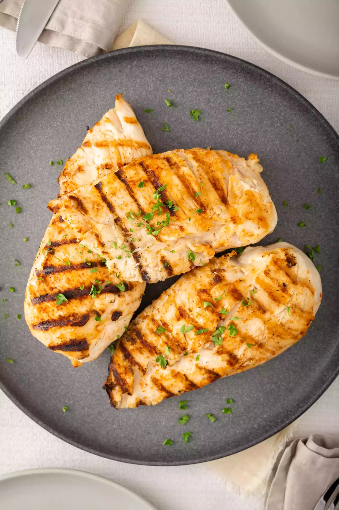

Grilled Chicken

Grilled Chicken
Baking a ham is not hard, you just need to watch the temperature to make sure it heats through
without over cooking. Adding a brown sugar glaze to baked ham takes it to the next level
without being overly sweet.
For this recipe a bone-in fully cooked ham cooks for about 12-14 minutes per pound (a 9lb ham
will take about 2 1/4 hours).
Ingredients
- Boneless Chicken Breast
- 3 tbsp Butter
- Salt
- Pepper
- Brown Sugar
Steps
- Preheat oven to 325F
- Combine butter, salt, pepper, and brown sugar. Brush over ham.
- Remove plastic disk on bone. Place ham flat side down in a roast pan and cover with tin foil. Roast 12-15 minutes per pound.
- 15 minutes before ham is done remove from oven.
- Brush with remaining glaze and place in over for 15 minutes.
- Let rest for 10 mintures before cutting.